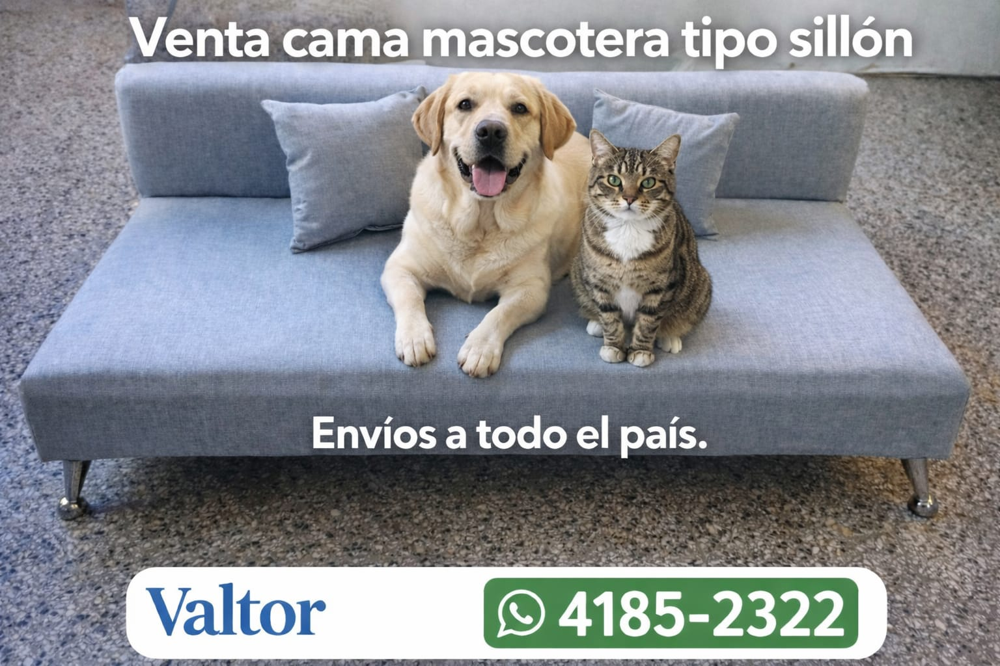
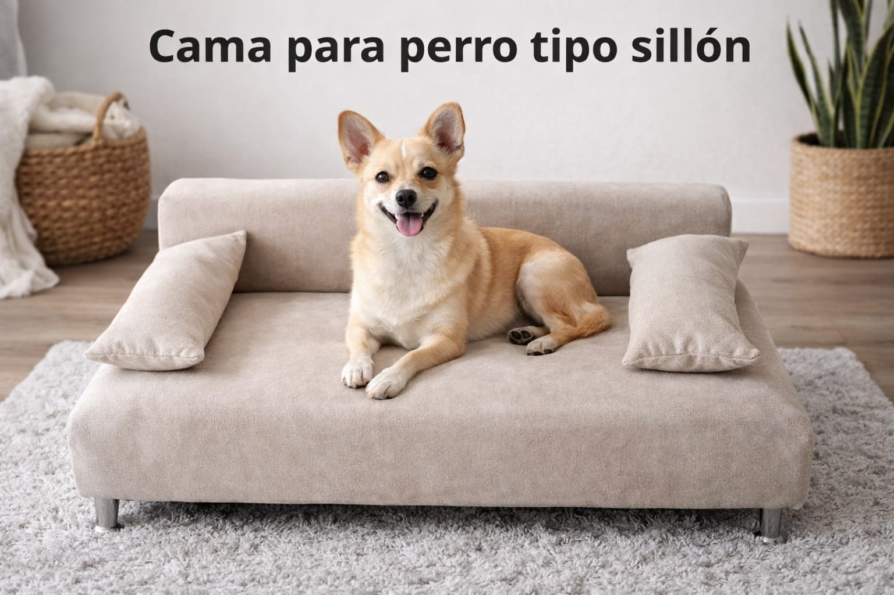
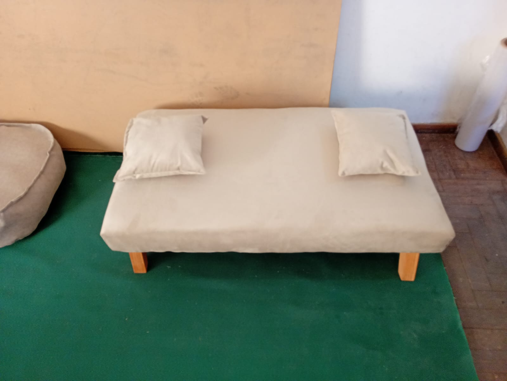
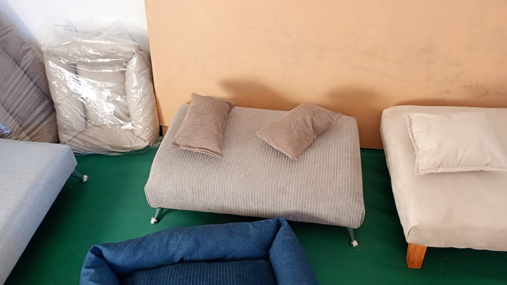
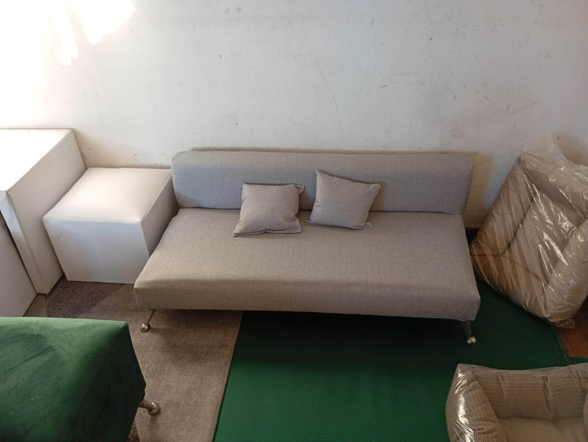
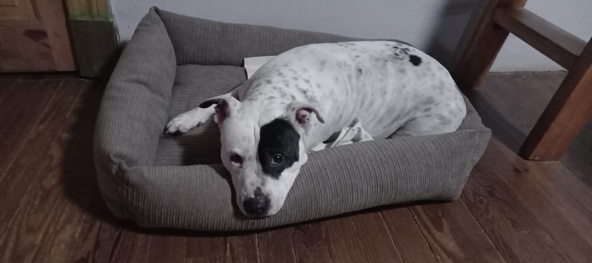
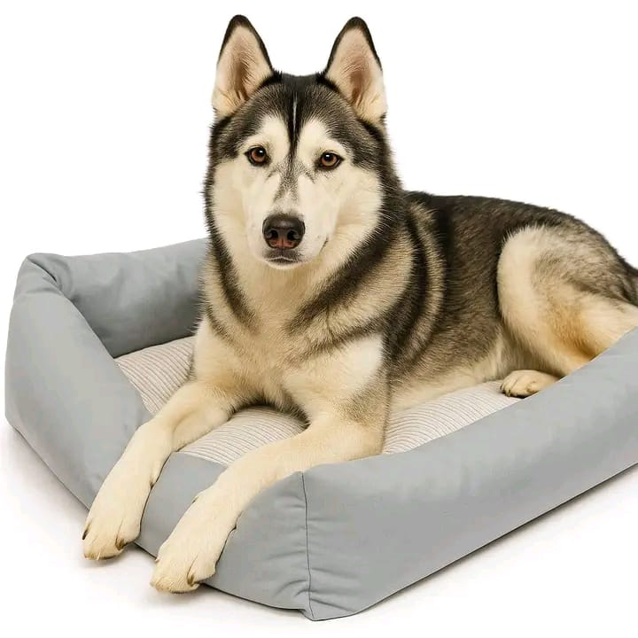
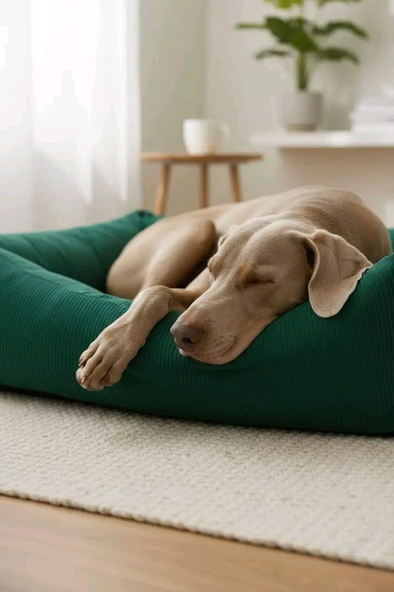
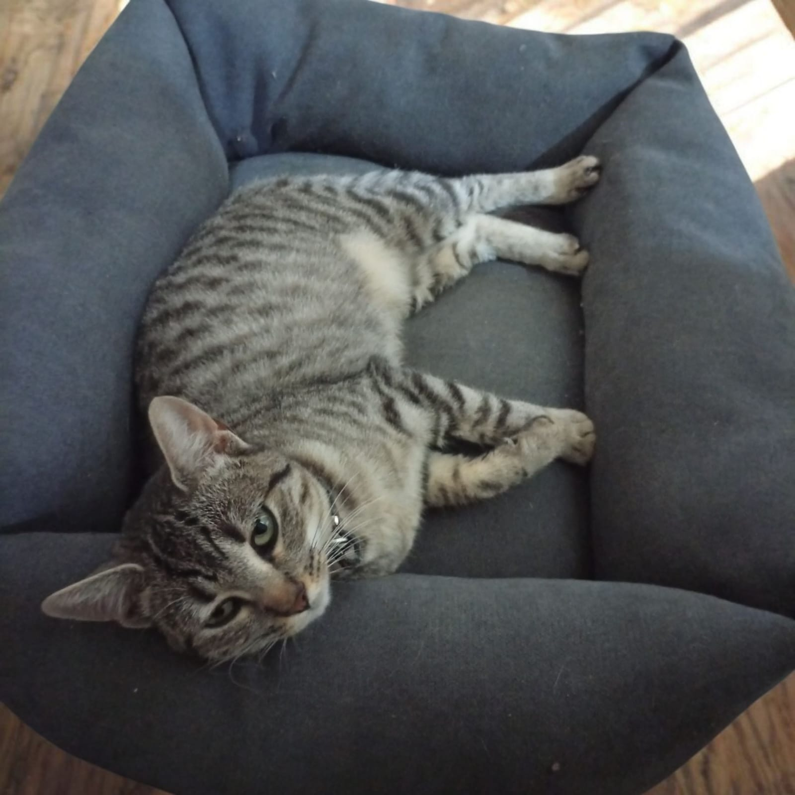

• Tela anti-desgarro
• Patas de aluminio
• Placa de alta densidad
• Mayor comodidad y soporte
• Colores a elección
• Medida 120 × 60 cm
• Medida 80 × 50 cm
• Tela anti-desgarro
• Patas de aluminio
• Placa de alta densidad
• Diseño tipo sillón
• Colores a elección
• Medida 120 × 60 cm
• Medida 80 × 50 cm
• Tela anti-desgarro
• Rellena de vellón siliconado
• Diseño flexible y cómodo
• Ideal para uso diario
• Medida 50 × 55 cm
• Medida 70 × 50 cm
• Medida 120 × 60 cm
Venta por menor y por mayor
Envíos a todo el país
Efectivo · Transferencia · Mercado Pago